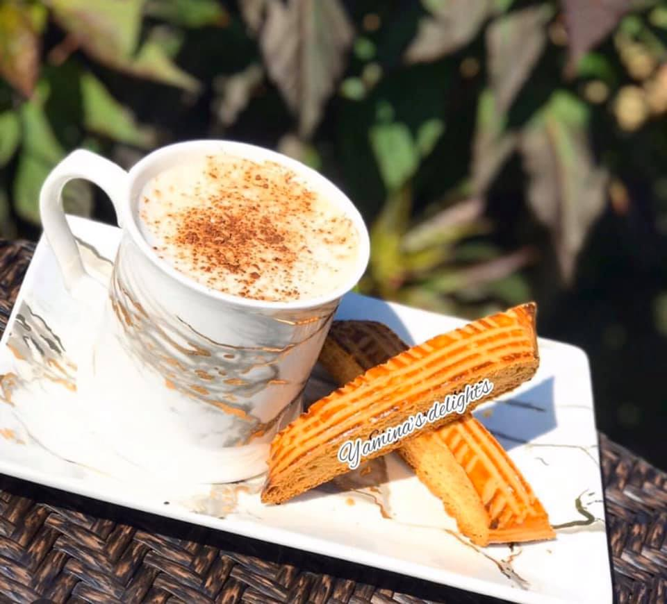
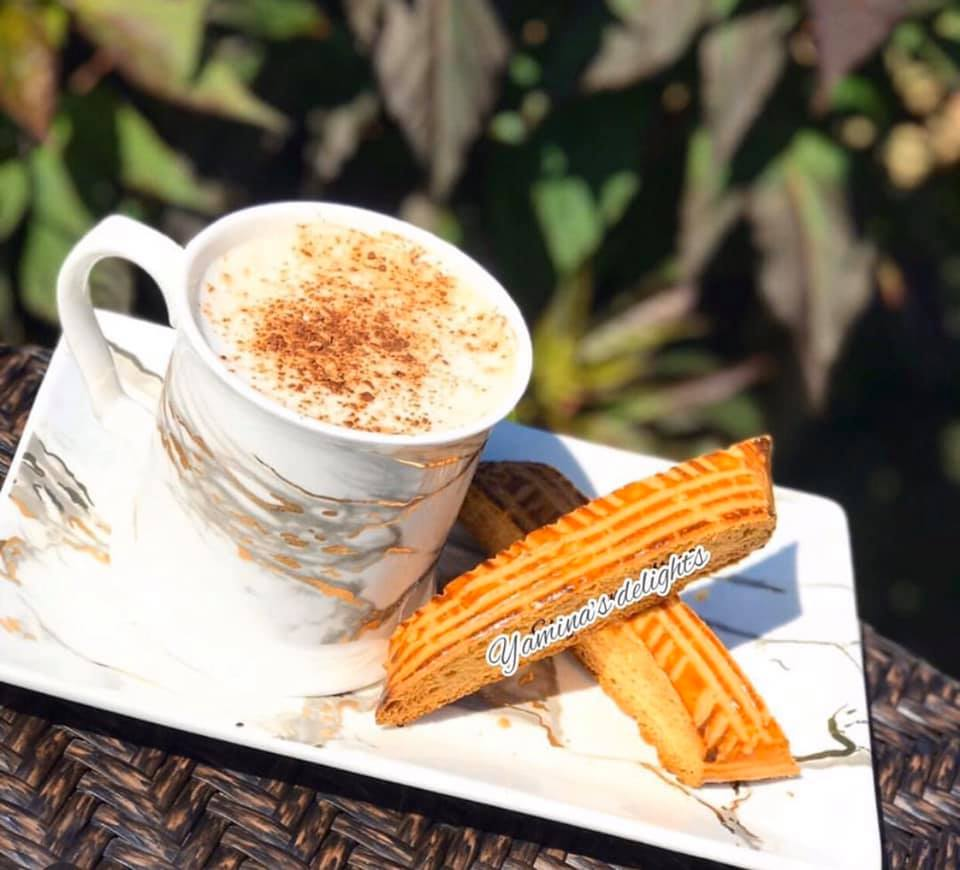

Biscotti The Original Biscotto, these Biscotti bring me back in time as a young kid walking into my dad Bakery. These are hand crafted and mixed with nothing but the finest ingredients using all natural extracts like lemon zest, oranges , anise , chocolate , almonds , pistachio ... and ivnever use imitation flavors. I hand roll each biscotto log, let them cool a bit and hand cut. Then they go back in the oven not once but two more times to get that delicious texture . Small batch baking is a lot of work and time but that's the only way you get the best tasting and quality . NO PRESERVATIVES Ingredients on this biscotti are: Eggs, sugar, vegetable oil, fresh squeezed lemon Lemon zest, flower, milk, vanilla. If you have any allergies please let me know when you place your order.